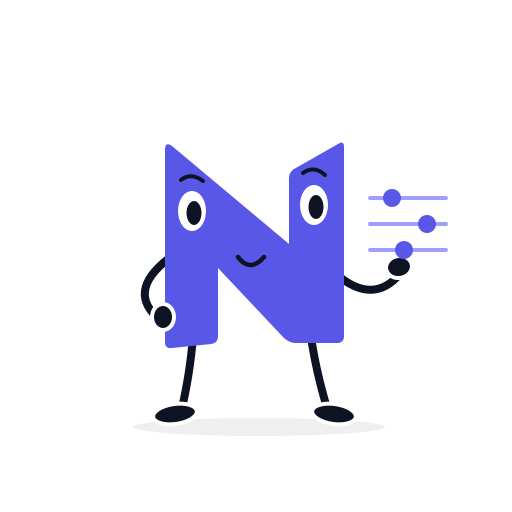
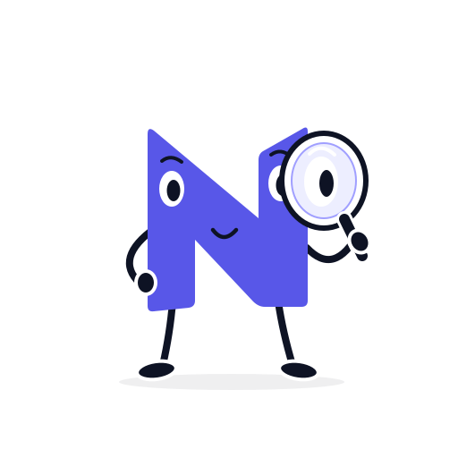

NIDVUE / Laser calibration lab
Turn scan images into a 3D point cloud.
Calibrate the laser with board images, scan an object, then explore its shape in 3D.

00 / Light & filter
Shape the light before you capture.
The laser wavelength, the lens filter and the ambient light decide how clearly the laser line stands out from the object. Set them here, then continue to the rig.
Light source and lens filter
Designed spectrum
01 / Camera & laser
The camera and laser rig.
The camera and the laser line beamer are rigidly offset. Their relative geometry defines every 3D point.
Camera and laser rig
Keyboard: arrows rotate, Shift + arrows pan, + / − zoom, Home resets.
02 / Board images
Choose board images
Calibration uses the board images to determine the laser’s position and angle relative to the camera. Choose an image set, then select Start calibration.
Board images
 Lens filter · on001 / 12
Lens filter · on001 / 12Calibration complete
12Smaller errors mean a better match. Review the results, then continue to Scan.
Technical details
—
03 / Object images
Choose an object to scan
Choose an object, then select Scan to build its 3D shape from the images.
Cartons in a component tote
Ambient light · no lens filter Lens filter · on001 / 12
Lens filter · on001 / 12Uses your calibration results.
04 / 3D points
Your object in 3D.
Built from the scan images you selected.
3D points

Your 3D shape will appear here.Calibrate the laser, then scan an object.
Keyboard: arrows rotate, Shift + arrows pan, + / − zoom, Home resets.